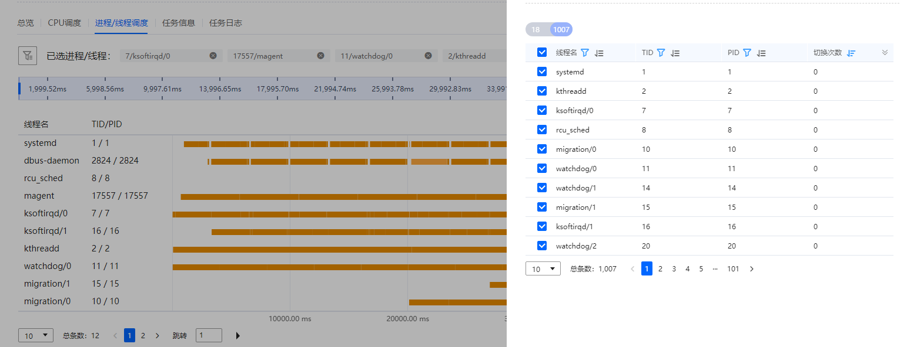

前提条件
已创建资源调度分析任务，并且成功完成分析。
操作步骤
- 在“工程管理”区域，依次单击指定工程和分析任务名称前的
 。
。展开节点列表。
- 单击节点名称查看分析结果。
- 单击节点名称默认进入“总览 ”页签，如图1所示，界面参数描述如表1所示。

- “NUMA节点切换”展示各个进程/线程在不同NUMA节点之间的切换次数。当切换次数大于基准值时，会用
 标识，鼠标悬停会显示详细优化信息。
标识，鼠标悬停会显示详细优化信息。 - 可以点击属性旁的进行自定义筛选进程/线程信息展示，所有信息默认按照‘切换次数’属性降序排列。
- “NUMA节点切换”展示各个进程/线程在不同NUMA节点之间的切换次数。当切换次数大于基准值时，会用
- 单击“CPU调度”页签查看CPU调度信息，如图2所示。
- 单击“进程/线程调度”页签查看进程/线程调度信息，界面参数描述如表2所示。 图3 进程/线程调度
 图4 进程/线程调度-筛选框
图4 进程/线程调度-筛选框
 - 单击“任务信息”页签查看当前节点任务的详细配置信息和采集信息。
如果任务执行失败，“任务信息”界面上会显示任务失败的原因。
- 单击“任务日志”页签查看任务“采集过程”和“数据分析”的日志信息。
- 单击节点名称默认进入“总览 ”页签，如图1所示，界面参数描述如表1所示。